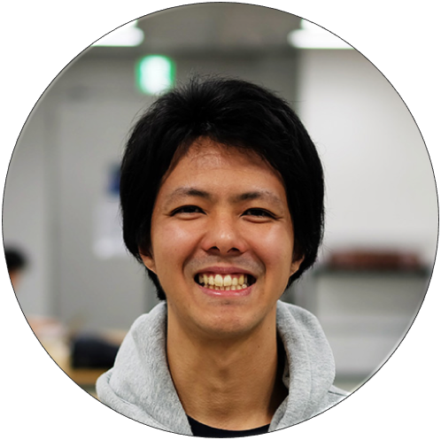
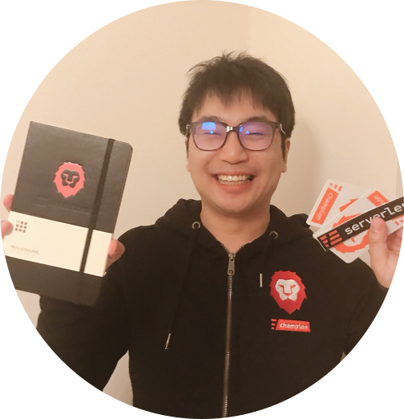
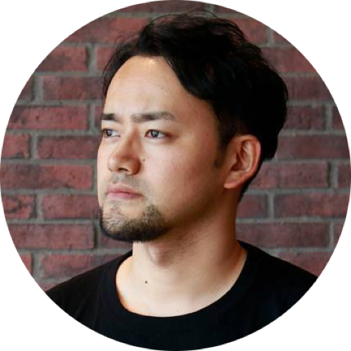
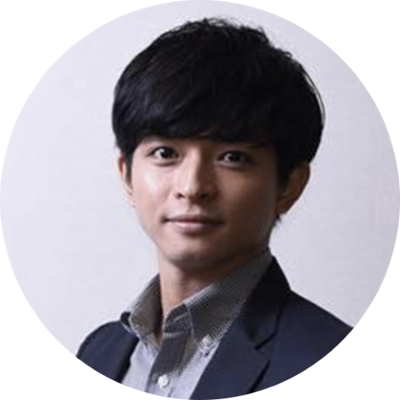

About ALIS株式会社ALISの会社、
チームについてご紹介
TEAM
ALISは長年企業システムに携わってき経験を持つエンジニアが多数在籍する、先進技術・特にブロックチェーンに強みを持つ企業です。豊富な経験・実績から御社のデジタルトランスフォーメーションを一気通貫で支援します。自社プロダクトではブロックチェーンはもちろん、バックエンドはフルサーバレス、フロントエンドにはVue.jsやNuxt.js等の最新技術・アーキテクチャを採用。低いレイテンシはもちろん情報セキュリティにおける完全性・機密性を堅牢に担保し、可用性も100%を誇ります(2018-2020年運用実績)。
- MASAHIRO
YASUFOUNDER / CEO - TAKASHI
MIZUSAWACO-FOUNDER / CMO - SOTA
ISHIICO-FOUNDER / CTO - KEIJU
TOGASHILEAD ENGINEER - GO
HAYAKAWAENGINEER  YUKI
YUKI
MATSUYAMAENGINEER- TAISUKE
YAMASHITAENGINEER - TAKAHIRO
HORIKEENGINEER - TATSUHIKO
KAMEILEGAL DIVISION - MASAYA
ISHIZAKADESIGNER - JIMMY VAN
DUURENCOMMUNITY DEVELOPMENT - KEN
KAWAILEGAL ADVISOR - KENTO
NUMASAWAADVISOR
MASAHIRO YASUFOUNDER / CEO

京都大学において核融合の研究を専攻し、ヘリカル型プラズマのアルヴェン固有モード励起のパターンをFortran言語で解析。2011年株式会社リクルート（Indeedの親会社）入社、ビジネスSNS・名刺管理アプリ・リファラルツール等の事業戦略、新規事業開発、開発ディレクションを行う。また、機械学習や自然言語解析等にも積極的に取り組み、2016年リクルートグループの企画に贈られる最高賞GROWTH FORUMを受賞。その後日本マイクロソフトとの共同プロジェクトのプロジェクトリーダーも兼ねる。ブロックチェーン技術に出会い、AI・VRよりも世の中の進化スピードを早められる手段だと確信し、ALISを立ち上げる。
TAKASHI MIZUSAWACO-FOUNDER / CMO
立命館大学在学中にスタートアップ企業を立ち上げた後、ベネッセコーポレーションに入社。わずか1年目にして全社組織のマーケティング部門MVPを受賞し、学生向けSNSや学習用タブレットの新規事業を経験。その後、「学ぶ」と「働く」の接続を目的にリクルートキャリアへ転職。MOOCやリファラル採用ツールの事業開発に従事する中で、コミュニティ共創型の事業開発に没頭する。マーケティングの重要な役割を「価値の創造源」に位置づけ、一人ひとりの持ち味が発揮されやすいエコシステムの実現を目指す。
SOTA ISHIICO-FOUNDER / CTO
業界歴13年超のエンジニア。新技術や未経験の業務を好み、役割や技術を問わず意識的にゼネラリストを指向。 暗号通貨、ブロックチェーンの技術動向は2013年より追っておりWEBの「次」を作る中核技術であると確信している。その流れを推し進めることに強い関心があり、安・水澤と共にALISをスタートした。
KEIJU TOGASHILEAD ENGINEER
エンジニア経験は12年を超え、内数年はサービス企画チームとしても従事。サービス開発としては BtoB や BtoC 等で複数経験し、技術としてもインフラからフロントエンドまでマルチに対応する。インターネット上の虚偽を可能な限り少なくしたいという思いから ALISへのジョインを決める。サービス設計から運用設計まで一貫したシステム開発を進めている。
GO HAYAKAWAENGINEER
大学院時代にウェブ上のデータを分析するウェブマイニングの研究を行い、その中でウェブの無限の可能性に気付く。2012年に新卒で株式会社サイバーエージェントに入社し、ソーシャルゲームの新規開発や同社の基盤技術の開発に従事した。その後、株式会社トランスリミットに転職。世界中にユーザーを持つスマートフォンゲームの新規開発を経験し、執行役員として組織マネジメントも努めた。ブロックチェーン技術を知った時、これは現在のウェブをディスラプトする革新的な技術だと直感的に気付き、ALISへのジョインを決めた。ブロックチェーン技術で次世代ウェブを作るべく、研究開発に励んでいる。
YUKI MATSUYAMAENGINEER
早稲田大学で法律を学んだ後、2014年に新卒で大手WEB企業に入社。大規模サービスでプロジェクトマネジメントを経験後、エンジニアとして複数サービスのグロースに携わる。また、スクラムマスターとしてスクラムチームの立ち上げ、継続的な価値のデリバリーのためにDevOpsやアジャイルプラクティスの実践を行う。ALISでは主にサーバレスを使ったバックエンドアプリケーションの開発に従事している。
TAISUKE YAMASHITAENGINEER
東京電機大学工学部を2008年卒業後、銀行系サービス開発会社に入社。地方銀行向けパッケージのカスタマイズ、共同センター移行、運用に携わる。汎用系の開発よりオープン系の開発に興味を持ったため、2012年より、Web系開発会社に転職。LAMP環境の開発・運用に携わる。2017年よりフリーランス。ALISでは主に認証部分、検索部分の開発を担当。
TAKAHIRO HORIKEENGINEER
WordPressやServerlessといったオープンソースコミュニティに参加して、多数のOSSプロダクトを開発したりコントリビューションをし続けている。現在はServerlessのテクノロジーを中心にServerless FramworkやServerless Step Functionsといったプロダクトのメンテナーや開発者をやっている。ブロックチェーンがもたらす正しく価値が認められる世界に魅力を感じると同時にServerlessとブロックチェーンの親和性にも深く興味を持ち、ALISへの参加を希望。チームにジョインした。
TATSUHIKO KAMEILEGAL DIVISION
東京⼤学を卒業後、凸版印刷を経てリクルートキャリアに⼊社。法務部⾨のスタッフとして、IT や Web サービス、マーケティング、⼈材採⽤周りに関する法務として活躍。特に新規事業領域における法務業務を得意とする。ALISでは法務に加えて財務・税務・労務・官公庁渉外などコーポレート機能全般を担当。ブロックチェーン業界全体の制度設計・動向にあわせてALISの事業運営をトータルでサポートしている。休⽇はトライアスロンやマラソンに興じる。
MASAYA ISHIZAKADESIGNER
桑沢デザイン研究所（kuwasawa design school）卒業、同窓会理事会委員。在学中から、フリーランスデザイナーとして活動。制作会社で、陸上自衛隊、大企業などのブランディングを行い、デザイン会社上海支社長兼CDとなる。その後、半年で中国で初となるカンヌライオン金獅子賞（サイバー部門）を受賞。シンガポールに移り、DDBシンガポールで働き、帰国。DeNAでAIと自動運転を活用したサービスのクリエイティブディレクターとなる。現在は、インドでIOT教育ビジネスや国内でブロックチェーンブランディングを始める。本職はデザイナー。
JIMMY VAN DUURENCOMMUNITY DEVELOPMENT
ジミーは海外アンバサダーとしてALISでのキャリアをスタート、活動を続ける中で今まで以上に強くALISの成長に関わりたいとの思いからチームに参加した。オランダのライデン大学とアムステルダム専門大学で学士の学位を二つと修士の学位を取得。この経験から分析＆実践の両側面から実行できる問題解決アプローチを得意としている。これまでにコミュニティメンバー・ユーザーとしてALISと関わり続けた経験も武器に、ALISコミュニティ内での共創を多く生み出していく。オランダ語の他に英語、日本語が得意。
KEN KAWAILEGAL ADVISOR
・フィンテック企業及び既存金融機関に対してフィンテックに関連する各種のリーガルアドバイスを行っています。仮想通貨、イニシャル・コイン・オファリング及びブロックチェーンに関して、特に多くの案件を取り扱うほか、自主規制団体の法律顧問を務め、また、内外の公的機関等への政策アドバイスにも積極的に取り組んでいます。・大手金融機関においてデリバティブ取引等の市場業務に約15年間従事した経験を踏まえ、金融規制法、デリバティブ取引、仕組商品、金融商品関連紛争等に関し、金融実務に即したアドバイスを行うことを得意としています。・複雑な金融取引やクロスボーダー取引への対処が必要な倒産/事業再生案件を多く手掛けています。特に金融機関の破綻法制については、関連機関及び大手金融機関から多くの依頼を受けています。・競争法分野における審判/訴訟対応、コンプライアンス体制整備についても広く取り扱っております。
KENTO NUMASAWAADVISOR
株式会社Aerial Partners代表取締役。仮想通貨取引計算サポートと税理士紹介を行う『Guardian』、仮想通貨取引計算ツールである『G-tax』を提供している。Twitterの仮想通貨アカウント「二匹目のヒヨコ（@2nd_chick）」中の人としてブロックチェーン業界の会計・税務領域を中心に啓蒙活動を行っている。会計コンサルティングファームであるAtlas Accounting代表として、仮想通貨交換業者の申請サポート・顧問業務の他、IPO支援やM&Aの会計デューデリジェンス等のアドバイザリーサービスを提供。複数のICOプロジェクトの顧問を務めており、一般社団法人日本仮想通貨税務協会理事も兼任

| 会社名 | 株式会社 ALIS |
|---|---|
| 代表者 | 安 昌浩 |
| 設 立 | 2017年05月 |
| 所在地 | 東京都渋谷区神南一丁目20番7号 川原ビル６階 |
Contact
ご質問等があれば、以下のフォームより
お問い合わせください。